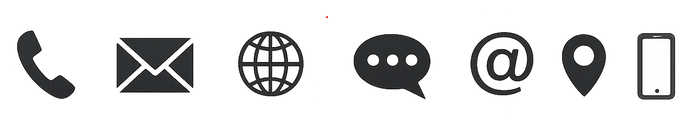

Sobre este contato
Esta página foi criada para fins de um projeto escolar sobre Música Brasileira. Aqui você pode enviar sugestões, dúvidas ou comentários sobre o conteúdo apresentado.
Como é um site educativo, as respostas podem não ser imediatas. O objetivo principal é demonstrar a estrutura de uma página de contato dentro de um site completo.
Informações de Contato
Email: musicabrasileira@email.com
Projeto: Trabalho escolar de HTML
Responsável: Letícia Bassani

A música conecta pessoas — por isso o contato também faz parte do site.